Screen Configuration
Asking AI
- Open the file screen or chat screen. You can open it by clicking on "File" or "Chat" in the sidebar on the left of the screen.
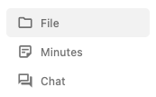
Enter your question in the chatbox at the bottom of the screen, and click the send button (or press Ctrl + Enter on Windows, Cmd + Enter on macOS).
- To use voice input 1. Click the microphone icon on the right side of the chat box.
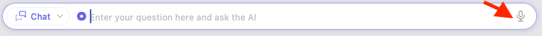
The first time you click the microphone icon after installing our app, the download of the AI model required for voice recognition will start. Voice input will be available after the download is completed.
<br>
2. Speak your question into the microphone.
3. Click the microphone button again to complete the voice input.
- The answer from AI will be displayed.
Indexing Documents for Questions
By registering document files in the index, you can ask AI questions about the information contained in the registered documents.
Registering Document Files in the Index
- Right-click on the document file you want to register and select "Add This File to Index". The AI status icon of the selected file becomes , indicating the registration is complete.
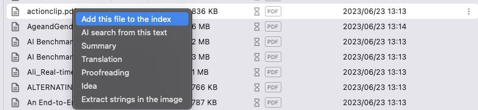
- Right-click on a folder and select "Add Files in This Folder to Index" to register all files in the folder.
Asking Questions About the Information in the Registered Document Files
- Click the search mode button on the left side of the chat box at the bottom of the screen, and select "Text Search".
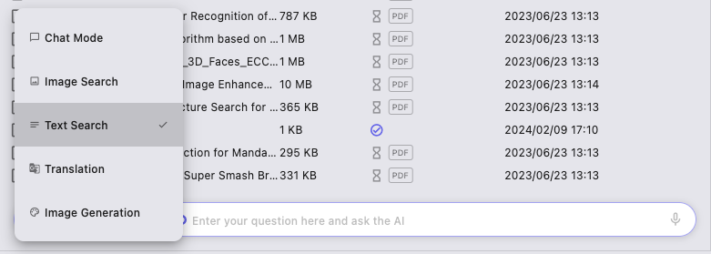
- Enter your question and send it.
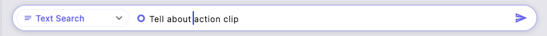
- AI will display the answer after examining the relevant files.
Removing Document Files from the Index
- To remove a registered document file from the index, right-click on it and select "Remove This File from Index".
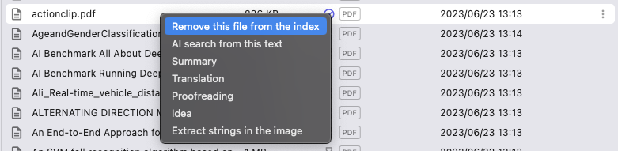
The AI status icon of the selected file becomes , indicating the removal is complete.
Translating Sentences
- Click the translation search mode button at the bottom of the chat box.
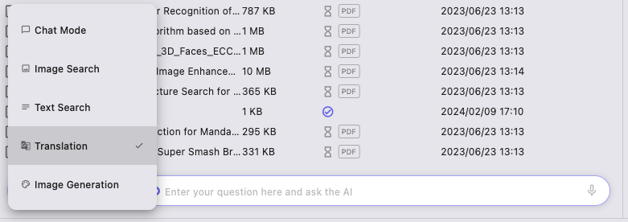
- Enter the sentence you want to translate, and send it.
- The translation result by AI will be displayed.
Summarizing Document Files
- Right-click on the file you want to summarize and click "Summarize".
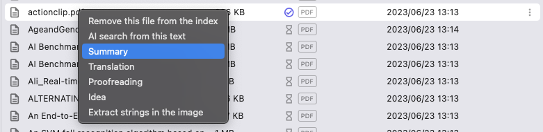
- The summarized result by AI will be displayed.
Translating Document Files
- Right-click on the file you want to translate and click "Translate". Supported file formats include pdf, txt, md, docx, xlsx. 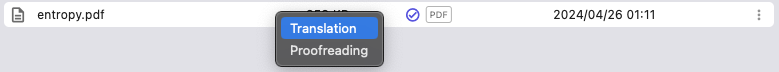
- The translation result by AI will be displayed. You can save the translation result as a file by pressing the "Save" button at the bottom right of the translation result.

Searching Images
By registering image files in the index in the same manner as Registering Document Files in the Index "Registering Document Files in the Index", you can perform similar image searches. The search will be conducted on the indexed image files. You can search using texts or images.
Searching with Text
You can search for images similar to the search words.
- Click the search mode button on the left side of the chat box at the bottom of the screen, and select "Image Search".
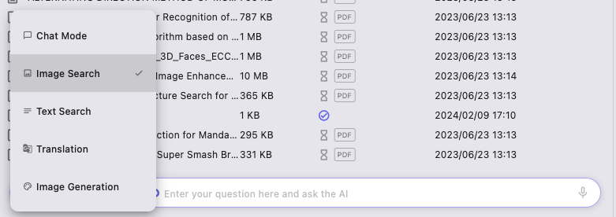
- Enter the search words in the chat box and send them.
- The search results will be displayed in order of similarity. Clicking on the displayed search results will grid display all images in order of similarity.
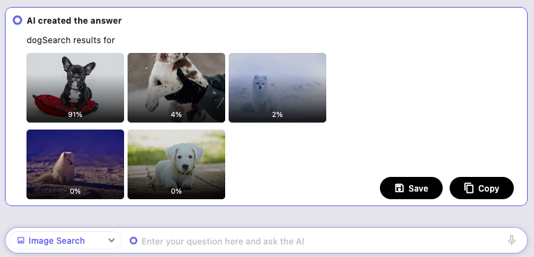
Searching with Images
You can search for images similar to the selected image. The image must be registered in the index.
- Right-click on the image file you want to search and select "Search Similar with This Image".
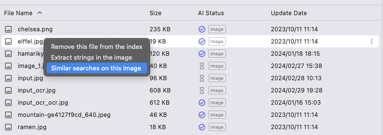
- The search results will be displayed in order of similarity. Clicking on the displayed search results will grid display all images in order of similarity.
Generating Images
- Click the search mode button on the left side of the chat box and select "Generate Image".
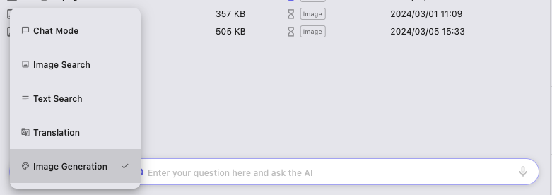
- Enter the outline of the image you want to generate and send it.
- The generated image result by AI will be displayed.
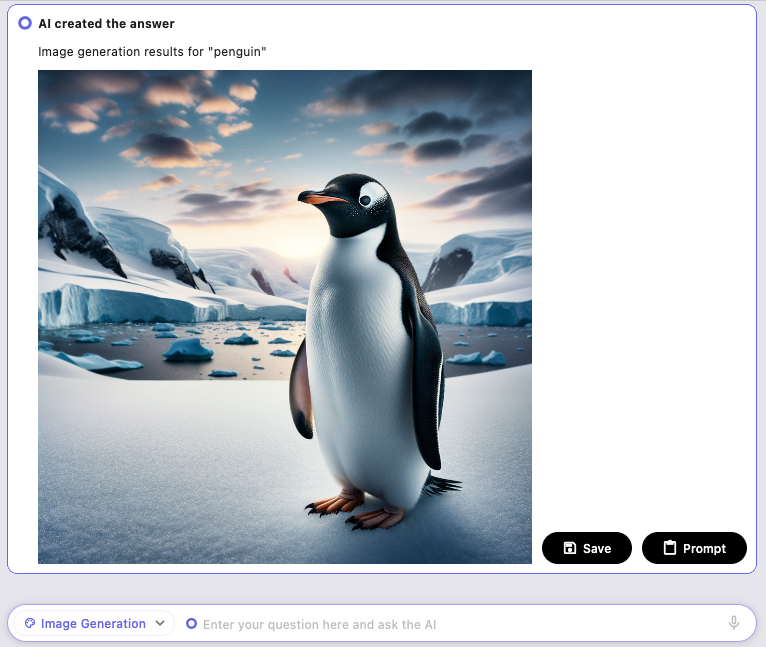
Taking Minutes
You can take minutes hands-free using voice recognition AI.
- Click the "Minutes" button on the left sidebar to open the minutes screen.
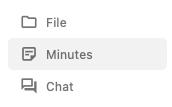
- Enter the meeting location in the "Enter Location" at the top right of the screen. You can also change the meeting name.
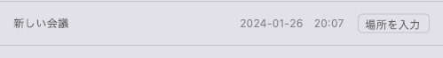
- Click the "Start Recording" button at the bottom to start recording the minutes.
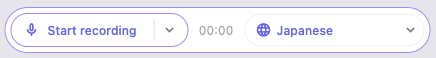
If you have not yet downloaded the AI model required for voice recognition, the download will start. It will be available after the download is completed. - When you are finished recording, click the "Stop Recording" button at the bottom to save the minutes.

Reviewing Recorded Minutes
You can review the recorded minutes by clicking on the minutes listed on the left side of the minutes screen.
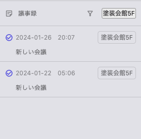
Clicking the button on the right side of the recorded text allows you to correct the text.
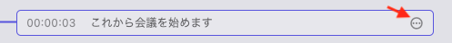
Additionally, you can start recording the minutes again by clicking the "Start Recording" button at the bottom.